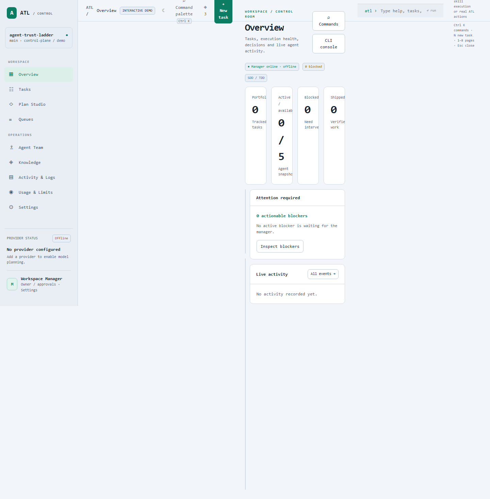

Choose your
team room.
ATL has a terminal TUI and a browser Control Plane. They read the same project state and enforce the same gates, but serve different working situations.
01 · TERMINAL TUI
SSH · CI · compact live logsKeyboard-first team room.
Use the TUI for terminal, SSH, CI, and dense live state. It is the compatibility surface, not the browser Control Plane.
Open it
atl tui atl dashboard --once --plain # static output for logs / CI / SSH
Move around
Tab next pane Up/Down j/k select or scroll c compose work x queue or unqueue l launch preview Enter / y confirm bounded run q quit without changing state

Terminal naming
atl tui and atl dashboard are terminal commands. atl ui opens the browser Control Plane.02 · BROWSER CONTROL PLANE
Full browser guide ↗Visual owner workspace.
Use the browser Control Plane for ownership: inspect tasks, compose and review plans, manage queues, review evidence, inspect providers, use Knowledge, and confirm bounded runs.
Open it
atl ui atl control-plane --port 4187
Use it for
Overview portfolio and blockers Tasks task contracts and actions Plan Studio prompt to plan to approval Queues review and launch preview Team agents and roles Knowledge claims, freshness, skills, routines Activity evidence and logs

Browser authorityPreview is information. Confirmation is authority. Provider sessions start only after explicit confirmation.
HOW TO CHOOSE
Use the right surface for the moment.
SituationUseReason
Daily project ownershipBrowser Control PlaneVisual task, queue, plan, evidence, and provider review.
SSH or remote shellTerminal TUIKeyboard navigation and no browser dependency.
CI or captured logs
atl dashboard --once --plainStable text snapshot for automation and handoff.Exact scriptingATL CLIComposable commands and machine-readable inspection.